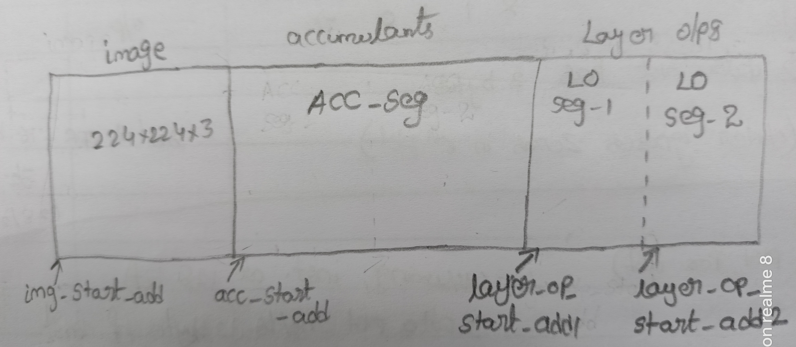

DDR Layout and Access Patterns¶
This document presents the patterns in which DDR is accessed by each block in the architecture.
Note
This layout is subjected to change based on the requirement of the model.
Image is stored in one portion of DDR memory whose start address is pointed by image_start_Add, accumulants start storing at address pointed by acc_start_add. Similarly, final layer outputs in separate portion of memory, wherein it is partitioned into two segments ‘LO Seg-1’ and ‘LO Seg-2’. The start addresses of these segments are pointed by layer_op_start_add1 and layer_op_start_add2, respectively. These two segments are accessed in double buffering scheme, wherein while reading ‘LO Seg-1’, valid layer output is written on ‘LO Seg-2’ and vice-versa. This is due to fact that the input feature map to the convolution block should be applied multiple times and not be overriden.
{kind=link}

Data Accessing of Various Blocks¶
When a valid configuration instruction is available, latch the address provided in the instruction and use it as the base address for accessing DDR. In each of the subsequent iteration, previous address is added with an offset to get a new address of DDR. The offset is calculated as
For Image (im2col) block¶
At the start of computation of first layer, input feature map is read from the address pointed by image_start_Add (provided in configuration instruction). For subsequent layers, feature map is read either from layer_op_start_add1 or layer_op_start_add2. Updates to the DDR access address are thus:
When a new layer begins, the DDR address is same as the address present in the configuration instruction.
In each iteration add the offset (calculated in (1)) to get new address.
After \(\lceil{\frac{\#Input\_Channels}{\#SA\_Engines}}\rceil\) iterations, re-initialize the base address of current layer and increment kernel counter by 1.
After \(\lceil{\frac{\#Kernels}{\#SA\_COL}}\rceil\) iterations, latch the new base address provided in the instruction to compute next layer.
For Weight block¶
At the start of convolution, the base address of weight segment in DDR is registered. It is always updated by adding the offset ((1)). This is due to fact that, weights are not reused and stored in continuous locations in the memory (both for conv and FC). The data accessing or scheduling is carried out if weight FIFOs has the status of ‘not almost_full (or) empty (or) almost_empty’.
Similar kind of mechanism can be used for bias block as well, since they are added with the SA outputs only after finishing the addition of all the accumulants.
For accumulants block¶
acc_start_add is the base address from which data is always read. The address is updated by adding offset until all of the accumulations of a given iteration are completed. Since the previous accumulants are not used in the current layer, if a new layer starts at that point, we can store the accumulants again in the same segment at the base address acc_start_add.
For output buffer block¶
In the last iteration of a convolution, the data valid signal is enabled, this implies that the outputs must be stored in either ‘LO Seg-1’ or ‘LO Seg-2’ whose base addresses will be a part of the instruction. In all iterations other than the last, outputs from the SA are accumulants and they must be stored as directed in the previous section. In each iteration, address is updated by adding offset.